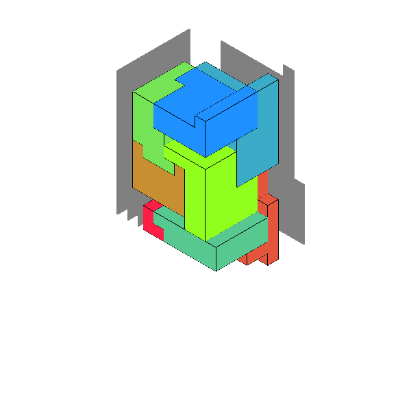
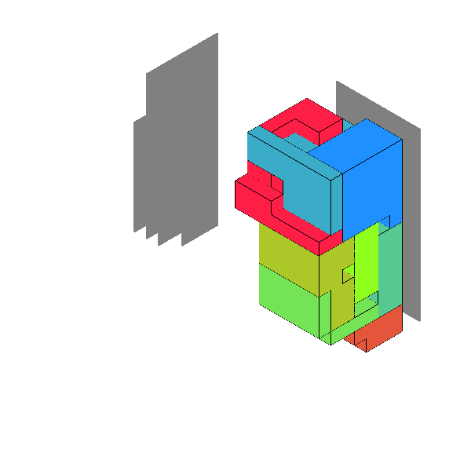
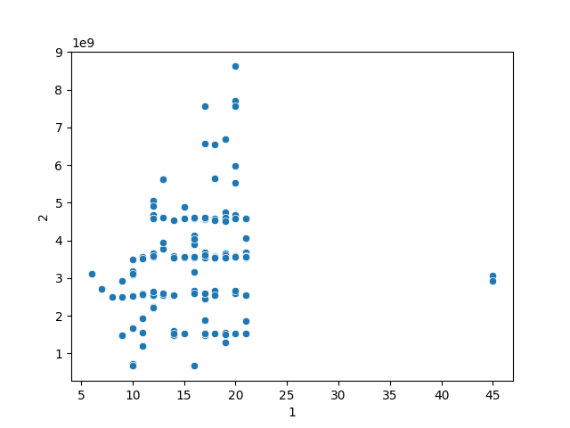
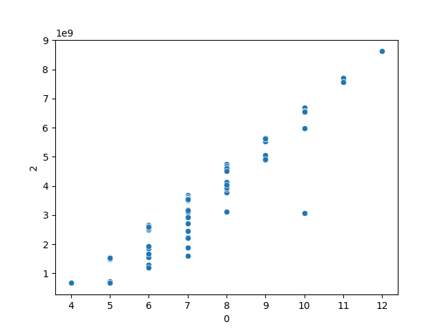

MC Digital プログラミングコンテスト2023（AtCoder Heuristic Contest 019） の参加記です。
下はseed=40の結果(score=165,708,812)。


問題（概略）
正面・右側から見た立体のシルエットの組が二つ与えられる。 両方のシルエットが実現できるようなブロックのセットを作る。 二つの立体を作るときに、できるだけブロックを共通して使うようにしたい。 また、小さなブロックは飲み込みやすく危険なので可能な限りセットを構成するブロックは大きくしたい。
2023/3/23
同じ立体問題だった前回のトヨタ自動車 実課題プログラミングコンテスト 2023 Spring ではそもそもACすることに苦戦し、なんとかプレテストではACに漕ぎつけたものの、システムテストでWAとなってしまっていた。 そのため、立体問題に苦手意識が生まれてしまい、AHCにとっては参加登録をしたものの数日取り組むことなく放置していた。
問題を読んでみる。うーん、難しそうだ。全く解法が思いつかない。
置ける場所を全てサイズ1のブロックで埋めるサンプルプログラムが付いていたのでこれをRustに移植して提出。 20,662,000,000,000点を得てこの日は終了。
2023/3/24
ローカル版ビジュアライザのソースコードを参考にして、スコアを計算するコードを作る。
2023/3/25
次のような方針を思いつく。この後、最後まで大きな方針は変わらず。
(1) 左のスペースから立方体を置ける座標\(p_l\)を選ぶ。これを原点とする。
(2) 右のスペースで原点とする座標\(p_r\)を選ぶ。
(3) スタック\(s\)に左から選んだ座標を入れる。
(4) 左で伸ばしていくブロックを管理するリスト\(cs\)を用意。最初は空とする。
(5) スタックから座標\(c\)を取り出す。
(6) 今まで伸ばしたブロック\(cs\)に\(c\)をくっつけて、原点を\(p_l\)から\(p_r\)に並行移動させ、24パターン回転させてシルエットに収まる配置であったら\(cs\) に \(c\) を加えて\(c\) の近傍を \(s\) に積む。
(7) 可能な限り (5) に戻ってブロックを延長する
(8) ブロックが延長できなくなったら、(2) に戻って右の原点を選び直す。
(9) 一番多くのブロックを伸ばせたパターンを確定させる。
533,534,221,417点を獲得。かなりスコアが改善した！
回転
ブロックの回転に対応するように、配置するセルを回転する方法を思い悩む。 ビジュアライザに同梱されているツールでは得点計算の際にブロックが同型であるか判定していのでそれを参考にしようと思ったが
(1) 片方のブロックをx, y, zが0以上でかつ座標が一番小さくなるように並行移動する正規化をする
(2) もう一方のブロックを回転させて(1)の正規化を行う、という処理を24回繰り返し、同じになるかを判定
ということをやっていて、ブロックを構築する際にいちいち同じことをやっていたら無駄に計算が走りそう。
サイコロを考えて、6つのうちどの面を上面にするか、及び上面を固定して回転させる方法が4通りあると考えると、回転方法は全部で24通りになるはず。 できれば回転の生成元をいくつか掛けるようなことをしないでダイレクトに移動先を求めたい。
調べると次のような回答が出てきたので、
How to get all 24 rotations of a 3-dimensional array?
How to calculate all 24 rotations of 3d array?
一つめを参考にして回転を全て列挙。 https://stackoverflow.com/a/70413438
#[derive(Default, Copy, Clone, Debug, PartialEq, Eq, PartialOrd, Ord, Hash)]
pub struct Coord(i64, i64, i64);
impl Coord {
fn rotate(&self, t: usize) -> Self {
let (x, y, z) = (self.0, self.1, self.2);
match t {
0 => Self(-x, -y, z),
1 => Self(-x, y, -z),
2 => Self(x, -y, -z),
3 => Self(x, y, z),
4 => Self(-x, -z, -y),
5 => Self(-x, z, y),
6 => Self(x, -z, y),
7 => Self(x, z, -y),
8 => Self(-y, -x, -z),
9 => Self(-y, x, z),
10 => Self(y, -x, z),
11 => Self(y, x, -z),
12 => Self(-y, -z, x),
13 => Self(-y, z, -x),
14 => Self(y, -z, -x),
15 => Self(y, z, x),
16 => Self(-z, -x, y),
17 => Self(-z, x, -y),
18 => Self(z, -x, -y),
19 => Self(z, x, y),
20 => Self(-z, -y, -x),
21 => Self(-z, y, x),
22 => Self(z, -y, x),
23 => Self(z, y, -x),
_ => unreachable!(),
}
}
}
その後、最初の左側の点を選ぶ順番を乱数を変えて10回試すようにすると、331,122,522,183点に改善。 最後にサイズ1ブロック埋めでスコアが大きく変動するような構成なので点がブレやすいのかもしれない。
2023/3/27
多次元配列を一次元に直し、時間いっぱいまで乱数で粘るように修正。 123,723,204,167点とかなりの向上が見られた。
2023/3/29
大きいブロックとその他小さいブロック多数の組み合わせでスコアが伸びないように見えたので、 5, 10, 25, 50, 100, std::usize::MAX から最大サイズを決めて探索。
ブロックの最大サイズと得点の関係は下のようになっていて明確な関係性は見られなかったが、スコアは91,182,918,858点に改善。

今まで常に限界まで探索していたが、サイズを小さくすることで、探索ごとの計算量が削減できイテレーション数を増やすことができたようだ。
2023/3/30
最大サイズは効果がありそうだったので、さらに多様性を作ろうと思い、乱数で最大サイズを動かして探索。 5〜(左と右で置ける場所の最大値)/2 から最大サイズをランダムに選ぶようにした。 70,758,817,150点に改善。
2023/4/1
空間上の座標に対し、周囲6マスで配置できる場所が何箇所あるかを最初に計算し、 右のスペースで原点とする座標を周囲で配置できる場所から少ないものから優先して計算することにした。
55,754,728,979点に改善。
2023/4/2
伸び悩む。最大配置できる場所が大きい場合、イテレーション数が少なくなっていたため、適当に「置ける場所が100以上だった場合、最大捜索数の乱数の範囲を 5〜(左と右で置ける場所の最大値)/4 から選ぶように変更。
シルエットで影で隠れている部分が大きいものに対しては少し効果あり。
下のように、ブロックの数が多くなるほどスコアが悪化するため、なんとかブロックの数に制約がかけられないかと思ったが、上手い方法が思いつかない。

結局考察が伸ばせず、51,166,186,482点で終了。
結果
プレテスト62位、システムテスト61位。トップ層の最終日の追い上げが凄まじく、一度は50位以内に入っていたもの最後の方は下がっていく順位を眺めていた。
感想
焼きなましで解を磨きあげてスコアを伸ばしたかったが近傍の作り方がわからなかったのが反省点。
ただスコアを見るだけでなく様々なデータを取って分析することが大事だと思った。 そろそろクラウドでテストケースを実行する環境を整えてテストを楽にしたい。
今回思い出しながら参加記を書いたので、次からは参加しながらメモを取ろうと思う。